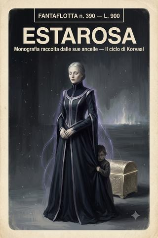

Il ciclo di Korvaal · volume II
Estarosa
La donna dietro il serpente: chi era davvero l'inquisitrice Estarosa, nel ricordo delle ancelle che salvò.
- ≈ 39 min di lettura
- Le sue ancelle
- dalle partite a Rogue Trader
- anche in EPUB, 1,8 MB
Nota introduttiva
FANTAFLOTTA — Ritratto
Questo non è un racconto. È una monografia, e un compianto.
Fu scritta, dopo la sua morte, dalle ancelle dell’inquisitrice Estarosa — le donne che la servirono, la vestirono, la sorvegliarono dormire, e la conobbero come nessun altro a bordo. Parlano al plurale, in un «noi» che non si scioglie mai, perché nessuna di loro si sente autorizzata a dire io di fronte alla memoria di lei. La chiamano soltanto «la nostra signora».
Il ritratto che ne esce è quello di un paradosso vivente: una donna che uccideva con un pensiero e piangeva ogni morte, la sera, con gli occhi chiusi; che firmava condanne e poi non dormiva; che bruciava mondi e poi coltivava erbe amare in una cassetta accanto all’oblò, per ricordarsi che qualcosa, da qualche parte, poteva ancora crescere per opera delle sue mani. Non una santa che il caso mise in un ruolo crudele, ma una donna che scelse un ruolo crudele e ne pagò ogni giorno il conto, in una moneta — il rimorso — che i suoi colleghi non spendevano perché non l’avevano mai posseduta.
È il volume più breve e più quieto del ciclo. Leggetelo, se vi va, dopo Il pianeta risparmiato, di cui chiude il cerchio: perché la bambina che Estarosa morì per affidare a un mostro, e la vergogna che seppe riconoscere in un medico grigio, sono le sue due ultime, silenziose vittorie.
Indice
Monografia raccolta dalle ancelle dopo la sua morte
- Estarosa (38016) — Chi era la nostra signora: le abitudini, i silenzi, la tisana amara, il sarcofago che nessuno vide mai aperto, e la sola cosa che le importasse davvero — la vergogna, la capacità di sentire il peso.
Linea temporale del ciclo di Korvaal
Le date sono dell’Era Imperiale. In grassetto l’opera raccolta in questo volume.
- 38012 — Origini (voce di Korvaal)
- 38013 — Il bottino di Devlan (voce di Jen)
- 38014 — La forgia e il relitto (voce di Nicodemus)
- 38015 — Il prezzo di Macragge (voce di Jen)
- 38015 — Prandium (voce di Jen)
- 38016 — Il pianeta risparmiato (voce di Galdor)
- 38016 — Estarosa — monografia, raccolta dalle sue ancelle dopo la sua morte
- 38016–38017 — Nel profondo dell’Imperium (voce di Kelbor Hel)
- 38017 → 38085 — Soli nel Warp? (voce di Jen)
- 38085–38086 — L’Enclave (voce di Sephora «Galaverna»)
La monografia è una testimonianza retrospettiva: le ancelle la compongono dopo la morte della loro signora, avvenuta sul suolo di Almuric (vedi «Il pianeta risparmiato»).
Estarosa
Monografia raccolta dalle sue ancelle, perché di lei non resti soltanto una riga.
Anno 38016 dell’Era Imperiale — testimonianza raccolta dopo la sua morte.
Ciò che dirà l’Ordo, e ciò che diciamo noi
Negli archivi dell’Ordo, della nostra signora resterà una riga sola. La conosciamo, quella riga, perché una di noi l’ha vista scritta: Inquisitrice Estarosa. Deceduta in servizio. Nessun successore designato. Sette parole per una donna, e nessuna delle sette è falsa, e tutte e sette insieme sono una bugia.
Perché noi l’abbiamo servita. Le abbiamo scaldato l’acqua e piegato le vesti, le abbiamo acceso il turibolo e retto lo strascico, l’abbiamo vista dormire — poco — e vegliare — troppo —, e sappiamo cose di lei che nessun archivio conterrà mai, perché gli archivi contengono i fatti, e i fatti sono la parte di una persona che sopravvive a tutte le altre proprio perché è la meno importante.
Mettiamo per iscritto questa monografia in disaccordo con ogni regola del nostro stato, che ci vuole invisibili e mute. Sappiamo cosa rischiamo. Una serva che scrive di un inquisitore è già, per il solo fatto di saper scrivere, un piccolo mistero da chiarire con mezzi che preferiamo non nominare. Ma lo facciamo lo stesso, perché siamo le uniche rimaste a sapere, e perché ciò che si sa e non si scrive muore due volte. La nostra signora è morta una volta, sul suolo di un mondo che non merita il suo nome. Non permetteremo che muoia la seconda, ridotta a sette parole in un registro che nessuno riaprirà.
Siamo poche, ormai, e sparse. Quando la casa si sciolse — e diremo come e perché —, ognuna di noi prese la propria strada verso il piccolo destino oscuro che le era stato assegnato prima che lei ci raccogliesse, e a cui, senza di lei, siamo tornate. Ci scriviamo ancora, di rado, con la prudenza di chi ha imparato che ogni parola può essere l’ultima. Questa monografia è nata così, un ricordo alla volta, un frammento cucito all’altro come si cuce una veste da un mucchio di stracci: brutta a vedersi, ma calda, e nostra.
Chi legga si prepari, dunque, a una cosa sola. Non troverà qui l’inquisitrice. L’inquisitrice sta negli archivi, e vi sta bene. Qui troverà la donna dietro il serpente. La conoscevamo solo noi. Ora la conoscerete anche voi.
La casa
Bisogna cominciare dalla casa, perché senza la casa non si capisce niente di lei, e noi che scriviamo siamo la casa.
A vederci da fuori, eravamo il seguito di un’inquisitrice: una manciata di ancelle, un vecchio inserviente, un paio di servitori automatici, un famiglio cherubino che intonava scongiuri e ci svegliava tutte con le sue nenie stonate. Un seguito come tanti, dimesso, silenzioso, del genere che nessuno guarda due volte. Ed era esattamente questo il punto. Perché chi guarda una serva non vede una persona; vede una serva. È la più antica cecità del mondo, e la nostra signora ne aveva fatto la sua fortezza.
Se ci guardiamo l’una il volto dell’altra, noi che siamo rimaste, e ci chiediamo da dove venivamo prima di reggerle lo strascico, nessuna trova una risposta che si possa dire ad alta voce.
Vera era figlia di un condannato. Non un condannato qualunque: un uomo dichiarato hereticus e bruciato con tutta la sua stirpe, il che avrebbe dovuto includere anche lei, che allora aveva otto anni. La nostra signora la prese dalla fila dei prossimi al rogo con una firma e una menzogna — la registrò come propria domestica personale, sotto giurisdizione inquisitoriale, intoccabile —, e Vera visse. Non seppe mai, la piccola Vera, perché fosse stata scelta lei tra i cento della fila. Nessuna di noi lo seppe mai, per nessuna. Era la regola della casa: non si domandava a nessuno cosa fosse stato, prima.
La vecchia Marta — la più anziana di noi, quella che ci insegnò a piegare le vesti e a tacere — aveva sentito, da bambina, voci che nessuno avrebbe dovuto udire. Un dono minore, appena un sussurro del warp, di quelli che di solito finiscono con un colpo di requiem alla nuca e una pratica archiviata. La nostra signora la trovò in un convento di reclusione, la battezzò cieca e sorda ai fini del registro, e se la portò via. Marta udiva ancora le voci, di notte. Ma le udiva al sicuro, e questo, ci diceva, era tutto ciò che una come lei potesse chiedere alla vita.
E poi c’erano quelle di noi la cui storia non racconteremo, perché è troppo, perché fa male anche solo scriverla, perché alcune sorti l’Imperium le riserva ai suoi figli più fragili con una fantasia che non merita di essere ricordata. Basti dire che ognuna di noi, entrando nella casa della nostra signora, era stata sottratta a qualcosa la sera prima che si compisse. Ognuna. Senza eccezione.
Non ce lo siamo mai dette apertamente. Nella casa non si parlava del prima. Ma lo sapevamo, come si sanno le cose che tengono insieme una famiglia senza bisogno di pronunciarle: che essere ancella della nostra signora non era un impiego, era un riparo. Che lei ci aveva raccolte a una a una dai bordi del precipizio su cui l’Imperium tiene i suoi figli più fragili, e ci aveva nascoste in piena vista, sotto i turiboli e le vesti, là dove nessuno pensa mai di cercare.
Sara era il segreto più grande e più pericoloso della casa. Ma la casa, tutta, era fatta di segreti salvati. E noi che scriviamo ne siamo la prova, per l’unica ragione che rende una prova irrefutabile: siamo ancora vive.
Ecco il primo tradimento della nostra signora verso il suo Ordine, quello che veniva prima di tutti gli altri e li conteneva tutti. Un inquisitore dell’Ordo il cui compito è trovare e recidere ciò che è marcio nell’umanità aveva costruito, sotto il proprio stesso mantello, un piccolo giardino di ciò che l’umanità aveva già condannato, e lo aveva coltivato per anni, e lo aveva difeso con la vita. Non per bontà — la parola è troppo piccola, e lei l’avrebbe rifiutata. Per qualcosa di più duro e più raro, che non abbiamo un nome per dire, e che si vedeva solo in questo: che scelse, una volta e per sempre, chi meritava di essere salvato, e poi non tornò più sulla scelta, nemmeno quando le costò tutto.
La notte che mi trovò
Ci sia concesso, in queste pagine di «noi», un solo momento di «io». Lo scrive una di noi, e non dirà quale, perché la storia potrebbe essere di ognuna, con nomi diversi e la stessa notte.
Avevo quindici anni, e una condanna. Non dirò per cosa — non conta, e comunque non ero stata io, e comunque non è mai contato, nell’Imperium, se sei stata tu. Contava che avessi il marchio addosso, e che al mattino sarei stata consegnata a chi consegna le ragazze come me, e che non c’era, in tutto il creato, una sola persona a cui la cosa importasse.
Venne di notte. Non so come fosse entrata; le porte erano chiuse, le guardie sveglie, e lei era semplicemente lì, in fondo alla cella, come se ci fosse sempre stata. Una donna in nero, bellissima, ferma. Non disse chi era. Mi guardò a lungo, in silenzio, con quegli occhi che sembravano leggere non ciò che avevo fatto, ma ciò che ero, che è una cosa diversa e che quasi nessuno si prende la briga di distinguere. Poi disse una frase sola, piano, che non ho più dimenticato: «Non hai fatto niente che meriti ciò che ti aspetta. E anche se l’avessi fatto — vieni.»
Vieni. Non «ti salvo», non «sei perdonata», non nessuna delle grandi parole che ci si aspetta da chi ha il potere di cambiarti la vita. Solo vieni, come si dice a qualcuno che è già dei tuoi e deve solo attraversare la stanza per rendersene conto. La seguii. Attraversammo corridoi che avrebbero dovuto essere sorvegliati e non lo erano — o forse lo erano, e semplicemente non ci videro, perché lei aveva deciso così. Firmò qualcosa, da qualche parte, sotto il naso di un funzionario che impallidì e non fiatò. E al mattino, invece della sorte che mi aspettava, avevo un turibolo da reggere, una veste da piegare, e un posto — un posto, per la prima volta in vita mia — in cui nessuno mi avrebbe fatto del male.
Non le chiesi mai perché me. Non lo chiedemmo mai, nessuna di noi. Ma ho passato gli anni da allora a cercare una risposta, e l’unica che ho trovato è questa: che lei sceglieva quelle che il mondo aveva già cancellato, non perché fossimo speciali — non lo eravamo —, ma perché eravamo già morte agli occhi dell’Imperium, e le morte, aveva capito, sono le uniche che puoi salvare senza che nessuno venga a riprendersele. Ci raccoglieva dalla lista di chi non sarebbe mancato a nessuno. Era la sua astuzia, e la sua pietà, e la stessa identica cosa.
Rimetto la penna alle altre. Ma volevo che restasse, da qualche parte, il suono di quella parola. Vieni. È la parola più bella che mi sia mai stata detta, e me l’ha detta l’essere più temuto che abbia mai incontrato, e le due cose, in lei, non erano in contraddizione. Erano lei.
La voce che non si alzava mai
Di lei, chi la temeva diceva sempre la stessa cosa, e la diceva con un brivido: che non aveva mai alzato la voce. Mai. A memoria dei suoi sottoposti — uomini duri, veterani, servitori dell’Ordo abituati agli urli dei commissari — l’inquisitrice Estarosa non aveva mai gridato una sola volta.
Lo dicevano come si dice di un abisso: con rispetto e con terrore. Perché un superiore che urla ti sta ancora trattando da uomo; ti concede la sua collera, che è pur sempre una forma di attenzione. Un superiore che ottiene tutto parlando piano ti sta dicendo un’altra cosa. Ti sta dicendo che non ha bisogno di alzare la voce, perché ciò che potrebbe farti, se volesse, non fa rumore.
E questo era vero. La nostra signora era una psionica di rango altissimo — quanto alto, l’abbiamo capito solo alla fine, e ci ha tolto il sonno. Avrebbe potuto spegnere una mente con la stessa noncuranza con cui noi spegnevamo una candela. Vi diremo l’unica volta in cui la vedemmo vicina a farlo, perché è l’unica volta che conti.
Fu su una stazione di transito, un luogo affollato e sudicio, dove un ufficiale della flotta — ubriaco, e stupido di quella stupidità speciale che l’ubriachezza concede ai vili — mise le mani su Vera, che allora aveva forse dodici anni, e la trattò come si trattano le serve che si crede di poter trattare così. La nostra signora era a pochi passi. La vedemmo voltarsi. La vedemmo guardare l’uomo, e per un istante — un solo istante — sentimmo tutte, fin nelle ossa, l’aria della stanza farsi densa, come si fa densa prima di un fulmine. L’uomo impallidì senza sapere perché. Il bicchiere gli cadde di mano. E poi la nostra signora chiuse gli occhi, li riaprì, e disse — piano, cortese, con quella voce che non si alzava mai — soltanto: «Lasciala.»
L’uomo la lasciò. Se ne andò barcollando, e non seppe mai quanto vicino fosse stato a non andarsene affatto. Vera tremava. La nostra signora le posò una mano sulla spalla — un gesto raro, per lei, che il contatto lo dosava come una medicina amara — e non disse nient’altro. Ma quella notte non dormì, e noi la sentimmo, dalla stanza accanto, respirare piano nel buio, come chi ha appena rimesso a posto qualcosa che per un attimo aveva minacciato di rompersi.
Gli altri vedevano il serpente: la donna bellissima e gelida, cortese e impenetrabile, disarmata eppure più pericolosa di una stanza piena d’armi. Noi vedevamo lo sforzo. Vedevamo cosa costa, ogni singola ora di ogni singolo giorno, tenere chiuso un coltello simile. Vedevamo una donna che si sorvegliava come si sorveglia un nemico, perché il nemico più grande che avesse mai affrontato era ciò che portava dentro.1
Chi la temeva la credeva fredda. Non era fredda. Era trattenuta. C’è una differenza, e la conosce solo chi ha retto lo strascico di una donna che, la sera, quando credeva che nessuno la vedesse, chiudeva gli occhi come si chiudono per non piangere.
La regola dei suoi giorni
Vorremmo che la ricordaste anche nelle piccole cose, perché è nelle piccole cose che una persona è più sé stessa, e la nostra signora, nelle piccole cose, era di una semplicità che avrebbe stupito chi la temeva.
Mangiava pochissimo, e sempre le stesse cose: un pane scuro e denso, di quelli da razione, che si faceva portare invece delle raffinatezze che il suo rango le avrebbe concesso; una tisana amara di erbe che coltivava lei stessa in una cassetta accanto all’oblò, e che difendeva dal cherubino famiglio come una madre difende un figlio; e, una volta all’anno, in una ricorrenza che non ci spiegò mai, un solo cucchiaio di miele, mangiato lentamente, con gli occhi chiusi, come chi assapora non il miele ma un ricordo. Non le chiedemmo mai di chi, o di quando. Ci sono cucchiai di miele che è meglio lasciare interi.
Vestiva sempre di scuro, di tagli severi, senza un gioiello — lei che avrebbe potuto adornarsi come una principessa del settore. L’unica vanità che le conoscemmo era una cura maniacale dell’ordine: le vesti piegate ad angoli perfetti, gli oggetti allineati, la sua piccola cabina spoglia come una cella. Ci volle tempo per capire che non era vanità. Era controllo. Una donna che tiene in ordine ogni cosa intorno a sé è una donna che ha qualcosa dentro che non riesce a tenere in ordine, e che si accontenta di vincere le battaglie che può.
Dormiva pochissimo, come abbiamo detto, e ci fu chiesto una volta perché. Rispondemmo ciò che ci era stato insegnato: che i doveri dell’Ordo non conoscono notte. Era una bugia gentile. La verità è che dormire, per chi porta dentro ciò che portava lei, significa allentare la presa sul coltello, e la nostra signora non allentava la presa. Nemmeno di notte. Nemmeno per noi.
Aveva però un’ora sua, e ce la lasciava intravedere di rado. Nelle prime ore, quando la nave era più silenziosa, si sedeva accanto all’oblò con la sua tisana amara e guardava fuori — non le stelle, ci accorgemmo col tempo, ma il nero tra le stelle, il vuoto, come se in quel nero ci fosse qualcosa che solo lei vedeva. In quei momenti il suo viso perdeva la maschera cortese, e si vedeva sotto una stanchezza che non aveva età, la stanchezza di chi porta un peso da così tanto tempo da non ricordare più come si cammini senza. Nessuna di noi la disturbava, mai, in quell’ora. Era il solo momento in cui la lasciavamo sola con ciò che era, e crediamo — ci piace credere — che fosse il solo momento in cui le concedevamo qualcosa, invece di riceverlo.
Perché questa è la cosa che l’Ordo non scriverà, e che noi scriviamo: che fu lei a servire noi, e non il contrario. Noi le scaldavamo l’acqua. Lei ci teneva in vita.
Il sarcofago di electrum
Portava con sé, ovunque andasse, un unico bagaglio che non affidava a nessuno: uno scrigno di electrum, finemente intarsiato, che un vecchio servitore reggeva e che lei non lasciava mai fuori dalla propria vista.2 Lo chiamavamo fra noi, per un pudore che solo ora sappiamo malriposto, il sarcofago — perché lo temevamo come si teme una bara, e perché una bara pareva, a portarselo dietro così, di mondo in mondo, con la cura con cui si scorta un morto amato. Ci sbagliavamo sul nome. Non era una bara. Era qualcosa di più suo, e di più terribile.
Non lo aprivamo mai — su questo siamo ancelle oneste, e lo diciamo perché a nessuno di fuori lasciammo mai credere altro: le nostre mani si fermavano sempre a un palmo dal coperchio. Ma non aprirlo non è ignorarne il contenuto, e sarebbe una menzogna peggiore lasciarvi credere che non sapessimo. Lo capimmo col tempo, un poco servendola e un poco da ciò che si dice fra chi ha servito: dentro c’era un’asta. Una lunga verga di pietra nera, ossidiana venata d’argento e trapunta di cristalli che parevano ascoltare; e attorno a quella verga, ovunque si trovasse, il warp taceva. Era questo il segreto che lo scrigno custodiva: non un potere che dà, ma un potere che toglie. Dove passava quell’asta, l’immateriale ammutoliva — le voci che ancora udiva la vecchia Marta, i sogni, e quel pulviscolo di scintille che a volte danzava intorno alle mani della nostra signora, come uno sciame di lucciole, quando il servitore col suo carico si allontanava troppo. Bastava che il vecchio si riavvicinasse perché le lucciole si spegnessero, e la nostra signora tornasse, agli occhi del mondo, una donna come un’altra.
Ecco perché, pulendo intorno allo scrigno, mille volte le nostre mani si fermavano a un palmo dal coperchio, respinte non da un divieto — lei non ci vietava quasi nulla — ma da qualcosa che saliva da dentro: un freddo, una pressione, un vuoto che tirava, come se in quel punto della stanza il mondo fosse un poco meno mondo. Non era una reliquia da adorare. Era un bavaglio. Il bavaglio che la nostra signora imponeva a sé stessa.
E questo, adesso, lo comprendiamo, ed è la cosa che ci stringe di più. La donna che poteva spegnere una mente come noi spegnevamo una candela, che uccideva con un pensiero, si portava dietro per tutta la vita l’unico arnese al creato capace di zittire quel pensiero. Teneva il coltello chiuso, dicevamo di lei; ecco con che cosa lo teneva chiuso. Non si fidava di sé nemmeno quel tanto che basta a dormire senza, e affidava a un vecchio servo il compito di reggerle accanto, giorno e notte, la propria museruola — abbastanza vicino da poterla afferrare in un istante, se il coltello avesse minacciato di aprirsi da solo; abbastanza lontano da lasciarla, nelle ore in cui il dovere lo esigeva, essere ancora ciò che era. Misurava quella distanza come misurava ogni cosa di sé: con la precisione spietata di chi si sorveglia da nemico.
Una sola volta una di noi lo toccò. Fu la piccola Nen, la più giovane dopo Sara, curiosa come sono curiosi i bambini che hanno smesso di aver paura troppo presto. Appoggiò appena un dito sul coperchio, di notte, credendo che nessuno la vedesse. La trovammo al mattino ancora accanto al sarcofago, sveglia, con gli occhi sbarrati, e per tre giorni non disse una parola. Quando tornò a parlare, non ricordava cosa avesse visto o sentito — o diceva di non ricordarlo, e noi non insistemmo. Ma da allora, quando passava accanto al sarcofago, abbassava lo sguardo, come si abbassa davanti a una tomba. La nostra signora, che di certo lo seppe, non la rimproverò. Le posò solo, un giorno, quella mano rara sulla testa, e disse: «Alcune cose è meglio non conoscerle. Ricordatelo, e sarai più saggia di me.» Fu l’unica volta che la sentimmo dire di sé qualcosa che somigliasse a un rimpianto. Ora sappiamo di quale rimpianto si trattasse: di conoscere, meglio di chiunque, ciò che portava dentro, e ciò che sarebbe accaduto il giorno in cui l’asta non fosse stata lì a tenerlo chiuso.
Perché c’è una cosa che nessuna di noi diceva ad alta voce, e che scriviamo qui perché la carta regge ciò che la lingua non osa. Che portarsi dietro quel bavaglio, ogni giorno, in ogni mondo, era il modo della nostra signora di dire — a sé stessa, e a chi avesse occhi per leggerla — che sapeva come sarebbe finita. Non si scorta una museruola per una vita intera se non si conosce, fino in fondo, la belva. Lei la propria la conosceva. Sapeva che un giorno il coltello si sarebbe aperto tutto insieme, e che nessuna asta, nessun vecchio servo, nessuna misura di distanza l’avrebbe più richiuso. E allora, forse, chiamandolo sarcofago non ci sbagliavamo del tutto. Non conteneva lei. Conteneva il silenzio con cui, per una vita, aveva rimandato la propria fine.
Il giorno in cui quella fine venne, nulla la tenne. Il coltello si aprì fino in fondo — apertamente, come una vita intera aveva temuto —, e non le lasciò nemmeno un corpo. La donna che si era portata dietro un sarcofago per tutta la vita non ebbe, alla fine, né la bara né il bavaglio che bastasse: ebbe solo il fuoco che il bavaglio, per anni, aveva soltanto rimandato. Ma di questo diremo dopo.
Sara
Ora dobbiamo parlare di Sara, ed è la parte più difficile, perché Sara era una di noi, e non lo era.
Era la più giovane delle ancelle, poco più di una bambina, raccolta — così ci fu detto, così credemmo per lungo tempo — come una qualunque orfana imperiale, di quelle che l’Ordo prende a servizio a migliaia. Reggeva il turibolo. Rideva piano. Faceva domande sciocche e dolci, del tipo che noi altre avevamo dimenticato di poter fare: perché le stelle non cadono, se non hanno niente sotto; se il warp fa male anche agli angeli; se la nostra signora, da piccola, avesse mai giocato. Chiunque la interrogava le cavava di bocca tutto ciò che sapeva con una facilità che ci faceva tremare per lei, perché in mano all’Ordo la sincerità è una malattia mortale.
Verso di lei la nostra signora aveva una tenerezza che non aveva per nessun altro, e che allora non capivamo. La faceva sedere vicino. Le parlava piano — a lei, la sola alla quale la voce che non si alzava mai si abbassava ancora di più, fino a diventare qualcosa che non avevamo mai udito rivolto a noi: dolcezza. Le insegnava cose, di sera, cose che non erano né preghiere né lezioni di servizio: come respirare quando la paura sale, come chiudere la mente come si chiude una porta, come tenere il coltello chiuso. Non capivamo perché insegnasse proprio a Sara, e proprio quelle cose. Le altre lezioni le davano a noi tutte; quelle, solo a lei, e solo quando credeva che dormissimo.
La proteggeva con una cura che sembrava sproporzionata, quasi ossessiva, per una semplice orfanella. Non la lasciava mai scendere sui pianeti. Non la lasciava mai sola con estranei. E una volta — una volta soltanto — la vedemmo perdere per un istante la sua calma perfetta, quando un medico di bordo, del tutto innocentemente, propose di sottoporre «la bambina» a un esame di routine del sangue. Fu la sola volta in cui la voce della nostra signora, pur senza alzarsi, tagliò come una lama: «No. Non lei.» E il medico, che non aveva fatto nulla di male, si scusò come se avesse bestemmiato, senza sapere di cosa.
Capimmo dopo. Capimmo tutto, insieme, in un giorno solo, e fu il peggiore.
Sara non era un’orfana qualunque. Sara era ciò che la nostra signora era stata, e più ancora: una psionica di potenza inconcepibile, un abisso in forma di bambina, che nemmeno sapeva di esserlo. E la nostra signora lo sapeva. Lo aveva sempre saputo. Le lezioni sussurrate di sera — respira, chiudi la mente, tieni il coltello chiuso — non erano vezzi. Erano l’addestramento più disperato che una madre possa impartire: insegnare a una bambina a nascondere ciò che è, per non essere trovata da coloro il cui mestiere è trovarla. La bella inquisitrice fredda che serviva l’Ordo del quale era il compito stesso trovare e distruggere esseri come Sara — quella donna aveva preso una di quelle creature, l’aveva chiamata ancella, l’aveva nascosta in piena vista tra i turiboli e le vesti, e le aveva insegnato a sopravvivere fingendo di essere ordinaria, esattamente come faceva lei.
Erano la stessa cosa, la nostra signora e Sara. Erano l’abisso che si riconosce nell’abisso, la donna che aveva imparato a tenere chiuso il coltello e la bambina a cui lo stava insegnando prima che qualcuno gliela portasse via. Ecco perché la tenerezza. Ecco perché la cura ossessiva. Non stava crescendo un’orfana. Stava crescendo sé stessa, una seconda volta, con la speranza folle di darle ciò che a lei nessuno aveva dato: una possibilità.
Ecco il serpente che tutti temevano. Ecco cosa nascondeva sotto la voce sommessa e il contegno impeccabile: un tradimento del suo stesso Ordine, portato avanti per anni, con la calma di chi ha deciso una volta per tutte che ci sono cose che vale la pena di dannarsi per proteggere.
Non lo facciamo santa. Su questo dobbiamo essere chiare, e lo saremo nella sezione che segue. Ma questo, questo lo sappiamo, e lo scriviamo perché è vero: che tra tutte le menzogne della sua vita — e ne disse, e ne visse, ché il suo mestiere è fatto di menzogne —, la più grande e la più costosa la tenne per crescere una bambina. E che la pagò intera.
Il suo mestiere
Sarebbe facile, a questo punto, farne una santa. Una donna che salva i fragili, che nasconde una bambina, che non alza mai la voce: la carta chiede quasi da sola di essere piegata verso l’agiografia, e noi che l’amavamo saremmo tentate di piegarla. Non lo faremo. Le dobbiamo la verità, e la verità è più scomoda, e più grande.
La nostra signora era un’inquisitrice, e faceva il mestiere dell’inquisitrice, che è un mestiere di sangue.
L’abbiamo vista mandare uomini alla morte con una firma e senza un tremito. L’abbiamo vista interrogare — non torturava lei stessa, ma stava presente, e il suo silenzio era peggiore di ogni strumento —, e l’abbiamo vista ottenere confessioni con quel suo modo di guardare dentro le persone, senza toccarle, fino a che non crollavano. L’abbiamo vista bruciare. Un mondo, una volta, un piccolo mondo di frontiera dove un culto aveva messo radici troppo profonde: diede l’ordine con la stessa voce con cui ci chiedeva la tisana, e il mondo bruciò, e lei guardò le registrazioni fino alla fine, senza distogliere lo sguardo, come si guarda qualcosa di cui si è responsabili e che non si ha il diritto di non guardare.
Faceva queste cose. Le faceva perché credeva — e questo è il punto che l’Ordo non capirebbe, e che forse non capiamo del tutto nemmeno noi — che il suo mestiere fosse necessario. Che l’umanità, lasciata a sé stessa, marcisca; che qualcuno debba recidere il marcio; e che se il compito è comunque terribile, tanto vale che lo svolga qualcuno che ne senta il peso, invece di qualcuno che lo goda. Ci disse una volta, in una delle sue ore accanto all’oblò, l’unica cosa che le somigli a una confessione: «Il mio Ordine è pieno di uomini che fanno il male credendo di fare il bene. Io faccio il male sapendo che è male. È l’unica differenza tra me e loro, ed è troppo poca, e me la porterò dietro.»
Ecco chi era davvero. Non una santa che il caso aveva messo in un ruolo crudele. Una donna che aveva scelto un ruolo crudele, lo svolgeva con competenza, e ne pagava ogni giorno il conto in una moneta — il rimorso — che i suoi colleghi non spendevano perché non l’avevano mai posseduta. Uccideva con un pensiero e piangeva ogni morte, la sera, con gli occhi chiusi. Firmava condanne e poi non dormiva. Bruciava mondi e poi coltivava erbe amare in una cassetta accanto all’oblò, come per ricordarsi che qualcosa, da qualche parte, poteva ancora crescere per opera delle sue mani.
E in mezzo a tutto questo — in mezzo al sangue, alle firme, ai mondi che bruciavano — si teneva la sua casa. Il suo piccolo giardino di condannati. La sua Sara. Come se avesse fatto, con sé stessa, un patto segreto e feroce: farò tutto il male che il mio dovere esige, ma salverò questi. Questi sono miei. Su questi il mio Ordine non metterà le mani.
Non era coerente. Non era pura. Era una donna che teneva insieme, dentro di sé, la carnefice e la protettrice, e che pagava la contraddizione con l’insonnia e con la solitudine. Ed è per questo che l’abbiamo amata come non si ama una santa — le sante non hanno bisogno d’amore, hanno il cielo. L’abbiamo amata come si ama una persona: per intero, contraddizioni comprese, sapendo esattamente cosa faceva con una mano mentre con l’altra ci salvava.
Lo sguardo, e l’uomo che non pagava
C’era, a bordo della nave su cui salimmo in quegli ultimi mesi, un uomo che la nostra signora osservava più di ogni altro, e non per stima. Il siniscalco. Un uomo grigio, esatto, dai modi di chi tiene i conti.
La nostra signora leggeva le persone come noi leggiamo un volto: senza sforzo, tutta insieme, alla prima occhiata. Ci diceva, a volte, la sera, piccole cose sugli uomini della nave — non per pettegolezzo, che non era nel suo carattere, ma come chi nomina ad alta voce ciò che ha visto per non dimenticarlo.
Del comandante diceva che era un fuoco, e che i fuochi si domano assecondandoli, mai contrastandoli; che era vanitoso come un pavone e pericoloso come un incendio, e che sotto la vanità e il pericolo c’era, curiosamente, qualcosa su cui si poteva contare — «un uomo che ama così tanto la propria leggenda» disse «farà di tutto per non guastarla, e questo lo rende, a suo modo, prevedibile. E i prevedibili si usano.» Del prete diceva che era una lama, e che le lame si rispettano da lontano e non si stringono mai per la parte affilata. Del pilota rideva, di quel riso trattenuto che le conoscevamo solo noi, e diceva che era l’unico uomo onesto della nave, perché l’unico che non fingesse di essere altro da ciò che era. Del medico — un uomo di nome Galdor, di cui torneremo a parlare, ché ci fu gentile — diceva la cosa più strana di tutte: che era l’unico a bordo ancora capace di provare vergogna, e che finché a bordo di una nave c’è anche un solo uomo capace di vergogna, quella nave non è ancora del tutto dannata.
Del siniscalco non rideva. E non lo assolveva.
Una sera — l’unica in cui la sentimmo davvero turbata, lei che non si turbava mai — lo nominò, e disse una cosa che non abbiamo più dimenticato. Disse che di tutti gli uomini pericolosi che aveva incontrato in una vita passata a cercare il pericolo, il siniscalco era il solo che la inquietasse, e non per ciò che poteva fare. «I potenti li leggo» disse. «Chi può ferirti lo senti, come si sente un temporale. Ma quell’uomo non ha temporale. Ho guardato dentro di lui, e non ho trovato nessuno che paghi.»
Non capimmo, allora. Lo capimmo solo dopo aver saputo cosa aveva fatto, il siniscalco, a un mondo lontano chiamato Macragge: aveva spento trecentosessanta milioni di anime, e le aveva messe a registro sotto la voce esito favorevole, e non aveva sentito nulla.
La nostra signora ogni morte la pagava, e nessuna gliela abbuonava la notte. Il siniscalco non aveva mai ucciso nessuno con le proprie mani, e non aveva pianto mai. Ecco cosa aveva visto, guardando dentro di lui. Aveva visto il suo esatto contrario. Aveva visto un uomo che aveva trovato il modo di togliere di mezzo il conto — non di saldarlo, di cancellarlo — e sapeva, lei che ogni conto lo pagava fino all’ultima moneta di dolore, che non esiste al mondo mostro peggiore di uno che ha smesso di pagare.
Ce lo disse con parole che riportiamo per intero, perché sono l’ultima cosa profonda che le udimmo dire su un altro essere umano, e perché ci fanno ancora paura: «Io e lui facciamo la stessa aritmetica, ancella. Togliamo vite e le contiamo. La differenza è che io porto il resto, e lui l’ha buttato. Un giorno il comandante gli chiederà qualcosa di enorme, e lui lo farà, alla lettera, con mano ferma, e non gli costerà nulla. Prega di non essere viva, quel giorno, per vederlo.»
Fu l’unica persona, sulla nave, che vide il siniscalco per ciò che era. E non poté farci nulla, perché di lì a poco toccò a lei pagare il conto più alto di tutti — e lo pagò, come sempre, per intero, mentre lui, altrove, continuava a non pagare niente.
Il fuoco
Della sua fine sappiamo ciò che vedemmo e ciò che ci fu raccontato da chi era con lei, sul suolo di quel mondo maledetto, e mettiamo insieme le due cose con la cura di chi ricompone un vaso sacro andato in frantumi.
Non tutte scendemmo su Almuric. La nostra signora, fedele a sé stessa, lasciò a bordo quante di noi poté — e Sara con noi, Sara soprattutto, che non lasciava mai scendere da nessuna parte. Fu Galdor, il medico, a raccontarci il resto, dopo, con una gentilezza di cui gli saremo grate finché vivremo;3 e ciò che non ci disse lui, lo ricostruimmo dai silenzi degli altri, che è il modo in cui si ricostruiscono sempre le morti che contano.
C’era una macchina, laggiù. Una cosa aliena che rubava il tempo, che invecchiava ciò che toccava, e che rivolse il suo torrente contro il comandante. La nostra signora era sfinita — aveva già dato fondo al suo potere per salvare quegli uomini, più volte, quel giorno. Aveva aperto il coltello che teneva chiuso da una vita, finalmente, apertamente, e ne aveva colpito i nemici con fulmini ed eteree onde di forza, e a ogni colpo — così ci disse Galdor, che la vide — sul suo volto non c’era trionfo, ma qualcosa che somigliava al sollievo di chi, per una volta sola, può smettere di trattenersi. Le restava appena la forza di stare in piedi.
Si gettò comunque. Si gettò sulla linea di fuoco, tra la macchina e il comandante, e innalzò un ultimo scudo con ciò che le rimaneva, e deviò la morte che era destinata a lui.
Non tutta. Un poco la trattenne, e il poco che trattenne le bastò. Al comandante restò appena l’incanutimento anzitempo della barba, una vanità in più di cui vantarsi. A lei restò tutto il resto. Chi era presente racconta che il suo corpo appassì a vista d’occhio, che la donna giovane e splendente che avevamo pettinato quella stessa mattina cadde a terra semiavvolta in vesti divenute di colpo troppo larghe, e che quando la sollevarono era una vecchia. Non invecchiata: derubata. Le avevano tolto gli anni tutti in una volta, come si strappa una pagina, e sotto la pagina non c’era più niente.
Galdor, che di ferite ne ha viste, ci disse che non c’erano cure, e che non avrebbe passato la notte. Passò la notte. Passò un giorno intero, appesa a un filo, in una casupola ai margini di una città in rovina, e chi la vegliò dice che non si lamentò mai, e che non alzò la voce nemmeno allora — fedele a sé stessa fino all’ultimo respiro, la nostra signora, che perfino morendo si tenne trattenuta.
Chiese una cosa sola, in quella notte, e la chiese a Galdor, e Galdor ce la riferì perché — disse — sentiva che ci apparteneva. Chiese di Sara. Non disse il nome; era troppo prudente per dire il nome anche in punto di morte. Disse soltanto: «La bambina. Che sia protetta. Chieda al comandante. Solo lui.» E quando Galdor, che non capiva, le domandò cosa intendesse, lei non rispose più. Aveva speso l’ultima lucidità in quelle sette parole — sette, come le sette dell’Ordo, ma queste vere —, e il resto lo passò in silenzio, con gli occhi chiusi, come tante sere le avevamo visto passare le sue ore, salvo che stavolta non li avrebbe più riaperti.
Il giorno seguente morì. E allora accadde la cosa che ci fu risparmiato di vedere, e che avremmo voluto vedere, perché era sua, ed era terribile, ed era bella.
Il potere che aveva tenuto chiuso per tutta la vita — il coltello che non aveva mai voluto sguainare del tutto se non un’ora sola, poche ore prima, per salvare degli uomini — al momento della morte si spezzò. Il suo corpo fu consumato dalle sue stesse capacità, in un olocausto di fuoco psionico che bruciò lei e tutto il quartiere in cui giaceva. Non lasciò salma. Non lasciò cenere da riporre. La donna che tutta la vita si era portata dietro ciò che noi chiamavamo il suo sarcofago non ebbe, alla fine, nemmeno un corpo da comporre.
Alcune di noi piansero, quando lo seppero. Altre no. Le seconde dicono che è così che avrebbe voluto andarsene: senza lasciare niente, senza che nessuno potesse studiare ciò che era stata, libera, per una volta sola, di aprire il coltello fino in fondo, ora che non poteva più ferire nessuno se non le pietre. Non sappiamo quali di noi abbiano ragione. Sospettiamo tutte.
Le sere
C’è una cosa che abbiamo scritto quasi di sfuggita, parlando del suo mestiere, e che invece è il centro di tutto; ed è giusto tornarci adesso, ora che l’abbiamo perduta e possiamo dirla intera. La nostra signora piangeva ogni morte. Non quelle che subiva — non ne subì mai, fino all’ultima —: quelle che dava. La sera, nell’ora sua accanto all’oblò, quando credeva che il nero fra le stelle la nascondesse anche a noi, chiudeva gli occhi; e noi, che avevamo imparato a leggerle la schiena come altri leggono un volto, sapevamo che dietro quegli occhi chiusi passava, uno per uno, il conto della giornata. I nomi firmati. I mondi ridotti a registrazioni guardate fino in fondo. Contava i suoi morti come il siniscalco contava le sue monete, salvo che lei, a differenza di lui, per ognuno pagava.
Era questa la sua doppia natura, e non c’era modo di scioglierla — o meglio, c’era, ma lei se la portava dentro come si porta una scheggia troppo vicina al cuore per estrarla. Uccideva con un pensiero, e con lo stesso pensiero, la sera, piangeva ciò che aveva ucciso. Le due cose non si annullavano a vicenda. Si sommavano. Chi crede che chi uccide non pianga non ha mai visto da presso una che facesse entrambe le cose nello stesso giorno, con le stesse mani, senza che l’una desse pace all’altra: il pianto non l’assolveva dall’uccidere, l’uccidere non le seccava il pianto. Le portava tutte e due, ogni sera, con gli occhi chiusi, e al mattino si rialzava e ricominciava. Non conosciamo penitenza più dura, né più inutile, né più sua.
Una di noi, una sola volta, la vide con gli occhi aperti in quell’ora. Non lo raccontiamo come una confidenza rubata, perché non lo fu: la nostra signora sapeva di essere guardata, e per una volta non si voltò a nascondersi. Aveva firmato, quel giorno, una condanna che non le era parsa pesare più di altre — un equipaggio intero, ci fu detto, colpevole di ciò di cui sono colpevoli gli equipaggi, cioè di essersi trovati dove il marcio li aveva raggiunti. Sedeva accanto all’oblò, e sul viso che non piangeva mai davanti a nessuno scendevano due lacrime sole, lente, senza un singhiozzo, senza una smorfia, con la stessa compostezza con cui faceva ogni cosa. Non se le asciugò. Le lasciò cadere fino in fondo, come se anche piangere fosse un dovere da svolgere per intero. Poi riaprì il registro, e proseguì. L’ancella che la vide dice che in quel momento comprese, più che in ogni altro, chi fosse la nostra signora: non una donna fredda che ogni tanto si commuoveva, ma una donna in fiamme che aveva imparato a bruciare in silenzio, perché il fuoco, lasciato libero, avrebbe consumato lei e chiunque le stesse accanto. Come, infatti, alla fine accadde.
Adesso quell’ora è nostra. Ce la siamo divisa senza accordarci, come ci siamo divise ogni cosa di lei. Sparse per il settore, ognuna nel proprio piccolo destino oscuro, teniamo tutte, la sera, un’ora accanto a un oblò o a una finestra o a un muro cieco, e chiudiamo gli occhi, e piangiamo i nostri morti — che ormai sono uno solo, ed è lei. Non ce lo siamo insegnato a vicenda. L’abbiamo imparato guardandola, come le bambine imparano dalla madre i gesti che non sanno di stare imparando. È la sola eredità che ci abbia lasciato, e non sapeva di lasciarcela, ed è più di quanto lasci la maggior parte delle madri: un modo di reggere il peso senza deporlo e senza esserne schiacciate. Chiudere gli occhi. Contare. Pagare. Riaprirli. Ricominciare. Lo facciamo per lei come lei lo faceva per gli altri, ed è, crediamo, l’unica preghiera che la nostra signora avrebbe riconosciuto come propria: non una che chiede, ma una che salda.
Ciò che restò
Restò Sara. E qui la nostra monografia diventa un atto d’accusa, e non ce ne scusiamo.
Morta la nostra signora, la verità sulla bambina venne a galla, come vengono a galla tutte le cose che qualcuno ha tenuto sotto con la propria vita, non appena quella vita finisce. Senza più il suo scudo, senza più le sue lezioni sussurrate, senza più la mano rara sulla testa a ricordarle di respirare e di tenere il coltello chiuso, Sara — spaventata, sola, senza capire — cominciò a essere ciò che era. E ciò che era non poteva restare nascosto a coloro il cui mestiere è vedere. L’Ordo — l’Ordine stesso che la nostra signora aveva servito, l’Ordine per cui aveva ucciso e mentito e pianto — l’Ordo emise il suo verdetto sulla bambina che lei era morta per proteggere.
L’ordine fu: eliminarla. Immediatamente. Decapitarla, bruciarne separatamente la testa e il corpo, spargerne le ceneri ai lati opposti di un sole.
Lo scriviamo per esteso, l’ordine, in tutta la sua meticolosa oscenità, perché chi lo legge senta ciò che sentimmo noi: che la nostra signora aveva dato la giovinezza, il corpo, l’anima e l’ultima menzogna della sua vita per proteggere una bambina, e che il suo premio, la ricompensa per una vita intera di servizio impeccabile e di rimorso onestamente pagato, fu che il suo stesso Ordine mandasse a cercare quella bambina per farla a pezzi con la precisione di un rituale.
Non fu l’Ordo a salvarla. Non fu la fede, non fu la giustizia, non fu nessuna delle cose grandi in cui ci hanno insegnato a credere. Fu il corsaro. Fu Korvaal — l’uomo-fuoco, il predone, quello che la nostra signora aveva definito un incendio da domare assecondandolo — a rifiutare l’ordine, a prendere la bambina, a chiamarla figlia. Le diede il suo nome. Sara divenne Xena Korvaal, e sparì nella pancia di una nave corsara, protetta d’ora in poi non da un’inquisitrice ma da un fuorilegge, che è forse l’unico posto, in tutto l’Imperium, in cui una creatura come lei poteva sperare di sopravvivere.
Alcune di noi lo trovano un orrore: che una bambina simile sia finita in mano a un uomo simile, in una nave di predoni, cresciuta da chi non conosce altra legge che la propria avidità. Altre — e siamo le più, ormai — ci troviamo un ultimo, segreto capolavoro della nostra signora. Perché ricordiamo le sue parole di quella notte, riferiteci da Galdor: la bambina, che sia protetta, chieda al comandante, solo lui. Non fu un delirio. Fu un ordine. L’ultimo che diede, e il più astuto di tutta la sua astuta vita.
Lei aveva conosciuto il comandante. Lo aveva letto, come leggeva tutti. Sapeva esattamente che razza di uomo fosse — vanitoso, avido, spregiudicato — e sapeva anche, forse, l’unica cosa che conta: che un uomo che ama così tanto la propria leggenda avrebbe difeso una bambina proibita fino alla morte, non per bontà, ma perché salvare ciò che l’intero Imperium vuole morto è esattamente il genere di gesto grandioso di cui la sua leggenda si nutre. Non poteva affidare Sara a un uomo buono; gli uomini buoni obbediscono, e l’Ordo le avrebbe strappate entrambe. Doveva affidarla a un uomo abbastanza vanitoso da disobbedire per gloria, e abbastanza spregiudicato da farla franca. Doveva affidarla a un mostro. E ne scelse uno.
Non possiamo provarlo. Le ancelle non provano nulla; noi ricordiamo, e crediamo. E noi crediamo questo: che la nostra signora non sia morta per errore, né per sacrificio cieco, ma che abbia scelto, con l’ultimo scudo, di consegnare la sua creatura più preziosa nelle mani dell’unico uomo abbastanza spregiudicato da tenerla in vita contro l’intero Imperium. Che sia morta, cioè, non solo proteggendo Korvaal, ma nominandolo. Passandogli il coltello che non aveva mai voluto sguainare, perché lo tenesse chiuso al posto suo, e lo insegnasse a tenere chiuso alla bambina.
Se ci sbagliamo, ci sbagliamo per amore, ed è l’unico errore che una monografia onesta possa permettersi.
Della casa, dopo, non rimase nulla. Ci sciogliemmo, come si scioglie ogni cosa che era tenuta insieme da una sola mano. Vera è tornata al mondo che l’aveva vista quasi bruciare, e serve in una casa che non sa chi sia. La vecchia Marta è morta l’anno scorso, in pace, udendo le sue voci fino all’ultimo — al sicuro, come la nostra signora aveva promesso. Piccola Nen è sparita, e preferiamo credere che si sia soltanto nascosta bene, come le fu insegnato. Di Sara — di Xena — non sappiamo più nulla, ed è così che deve essere: la miglior notizia, per una come lei, è nessuna notizia.
Della nostra signora, l’Ordo dirà sette parole. Noi ne abbiamo dette molte di più, e nessuna basta, e tutte insieme quasi.
Si chiamava Estarosa. Uccideva con un pensiero e pagava ogni morte. Non alzò mai la voce. Faceva il male sapendo che era male, ed era l’unica del suo Ordine a saperlo. Portò per una vita, chiuso in uno scrigno di electrum, il bastone che le zittiva il potere, e morì nell’istante in cui nessuno poté più zittirlo. Fece della propria casa un riparo per i fragili che l’Imperium aveva già condannato, e noi che scriviamo queste parole ne siamo le sopravvissute. Amò una bambina che il mondo voleva morta, e la salvò con l’ultima menzogna, dandola a un mostro perché la crescesse.
Che riposi. Se ne aveva così poco, da viva.
— le sue ancelle
Da dove vengono queste storie
Queste cronache non sono state ritrovate in un archivio imperiale. Sono nate attorno a un tavolo, come tutte le storie migliori.
Il ciclo di Korvaal deriva dalle partite di Rogue Trader giocate al Brainstorm Club, associazione di giochi di ruolo e da tavolo di Faenza (RA). Dietro ogni voce di questo libro — il comandante megalomane, il siniscalco che conta i morti, le ancelle in lutto, il magos che non è più carne — c’è una persona vera, seduta a un tavolo vero, che una sera ha deciso cosa il suo personaggio avrebbe fatto. Il resto è soltanto trascrizione.
Al Brainstorm Club si gioca da più di trent’anni, e non a un gioco solo: oltre a Rogue Trader, ci si siede a Brancalonia, a Dungeons & Dragons, ad Apocalypse World e a molti altri giochi di ruolo. Il gruppo che ha dato vita a queste cronache porta avanti le proprie campagne da quasi quindici anni.
Il club accoglie nuovi giocatori da tutta la Romagna, e tiene sessioni dedicate ai più giovani — bambini dai 9 ai 15 anni, ragazzi dai 16 ai 19 — per imparare non soltanto a giocare, ma anche a dirigere il gioco: a costruire mondi e a raccontare storie come queste.
Se una di queste voci vi ha tenuto compagnia, ricordate che è cominciata con un tiro di dado e con qualcuno che, a un tavolo di Faenza, ha detto: «il mio personaggio, invece, fa così».
Brainstorm Club — Faenza (RA)
brainstormclub.it · info@brainstormclub.it
Note
Fu un ufficiale che la corteggiava — e che non capì mai nulla di lei — a chiederci, quella volta, perché dormisse così poco. Cosa rispondemmo, e cosa invece tacemmo, è scritto altrove in queste pagine. Qui basti aggiungere ciò che lui non seppe mai: cercava una donna, e aveva accanto una sentinella che non si sarebbe addormentata al proprio turno nemmeno per lui.↩︎
Il vecchio che lo reggeva non parlava mai, e noi credevamo fosse muto per natura. Comprendemmo poi che era muto per scelta: chi porta il bagaglio di una santa impara presto che certe cose si custodiscono meglio con la lingua ferma. Alla sua morte un altro ne prese il posto, e lo stesso silenzio, senza che nessuno glielo insegnasse. Attorno alla nostra signora il silenzio si tramandava come un mestiere.↩︎
Del medico Galdor scriviamo il nome con gratitudine, cosa che facciamo per pochissimi. Fu lui a riferirci gli ultimi giorni e le ultime parole della nostra signora, quando avrebbe potuto tacere, o mentire, o consegnarci come lei aveva sempre temuto. Non lo fece. C’è, in certi uomini che il loro mestiere costringe a stare vicino alla morte, una decenza che gli uomini più fortunati non imparano mai. Se queste pagine dicono il vero sulla fine della nostra signora, è perché un uomo capace di vergogna scelse, per una volta, di raccontarla a delle serve invece che ai propri superiori.↩︎
Preferisci leggerlo nel tuo lettore, o portartelo offline?
⤓ EPUB 1,8 MB